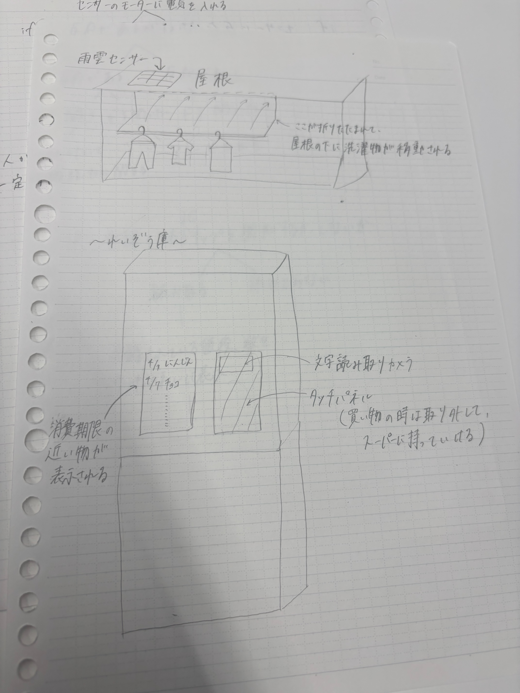

<!DOCTYPE html>
<html lang="jp"></html>
<head>
    <title>ものを操る</title>
</head>
<body>
    <h1>プログラムで物を動かす</h1>
    <h2>１．プログラムでモノを動かしているものにはどんなものがあるか？</h2>
    <br>
    <div>
        プログラムで動かしている物は、世の中にたくさんあります。
    </div>
    <div>
        その中には、私たちが日常で使う、電子レンジやエアコン、お風呂など身近なものから
    </div>
    <div>
        エスカレーター、お寿司のレーン、レジの自動清算など、様々なところで私たちの生活の支えになっています。
    </div>
    <h2>２．↑で挙げたものをプログラミング的な思考で手順を説明</h2>
    <br>
    <h2>３．プログラミングでどんなことができそうか？自分で考えたアイディア</h2>
    <br>
    <div>↑このようなものが実際に販売されれば、生活がより快適になりますね。</div>
</body>